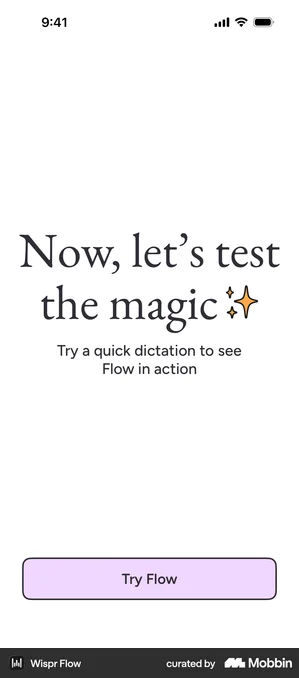
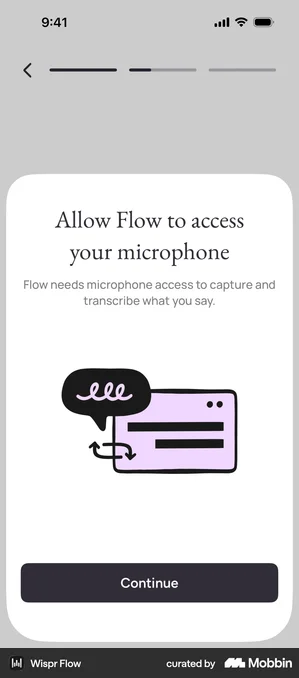
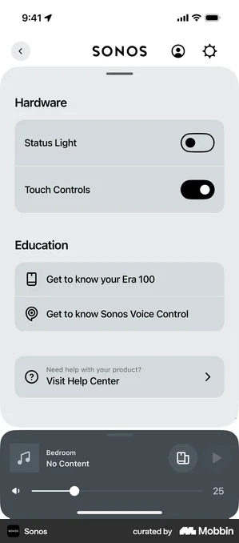
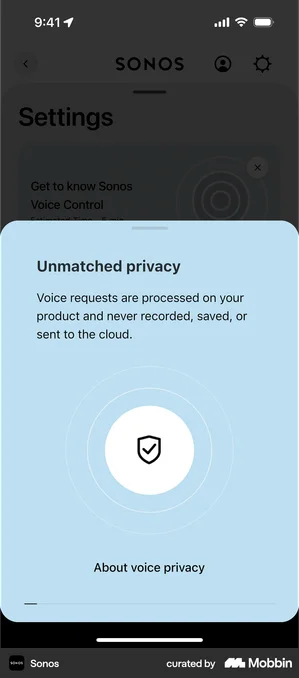
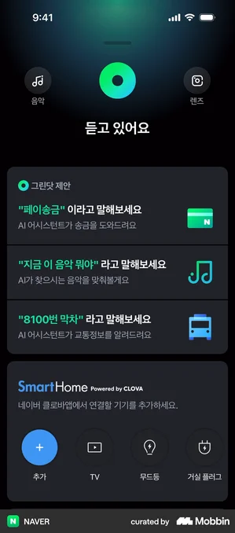
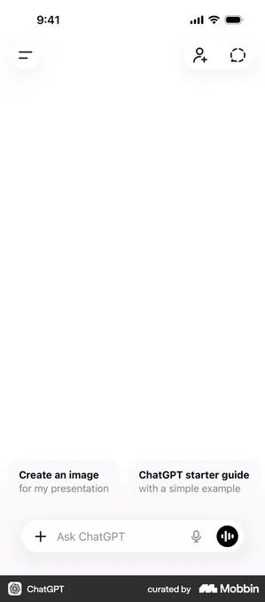
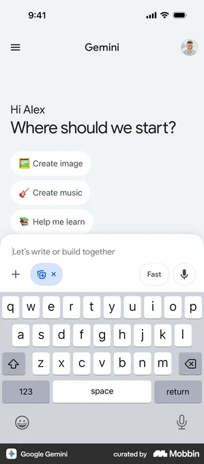
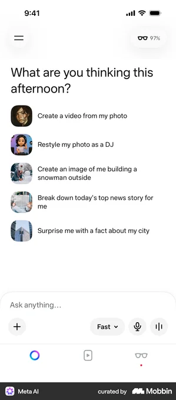
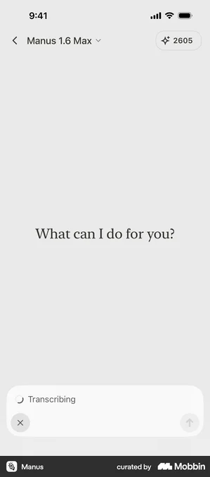

Getting a first-timer to speak — and win — from the homepage
The home screen already has the raw materials: a greeting, tappable “sayable phrase” rows, a mic composer, and a real Saathi voice screen (orb + hold-to-talk + Sarvam STT). What’s missing is a first win by voice — the moment a new user says one thing and gets a real outcome. These three concepts each engineer that moment from the front door, and the Mobbin scan below shows how comparable products pull it off.
Two gaps we’re closing: (1) tapping a sayable phrase today dead-ends in a “thinking forever” screen — the obvious first action gives no answer. (2) Voice sits one push deep and is framed as text (“Ask anything”), so a first-timer is never clearly invited to speak. Every concept fixes at least one.
← Related study: moment-led home · pending tasks (1 vs many)
1 · “Bolo ek baar” — say one thing, win once
On the very first launch, Home steps back and coaches a single spoken line: “Tap and say — Aaj ka rashifal batao.” The user holds the mic, sees their words appear live, and gets a real answer card seconds later — then a warm “saved to your recents” win. The whole first task happens before any login, name, or permission wall.
2 · Command cards that actually complete
Reframe the four sayable rows as command cards: the phrase, a one-line promise of the outcome (“Saathi will pay the bill for you”), and a service glyph. The real change is behavioural — tapping runs to a completed result (bill paid, panchang shown) instead of the current dead-end. The homepage you already ship becomes a working first-win surface.
3 · A living orb + a “Bolo” button on Home
Bring the resting Saathi orb onto the home screen and add an explicit Bolo (Speak) button beside the composer, so speaking is a first-class verb rather than something hidden inside a text field. In the listening state the orb comes alive and streams a live transcript of the user’s words — instant proof that “it heard me”.
The research — how other products onboard people into voice
Real screens behind the three concepts, grouped by the job each does. The scan chased four questions: how do apps get a first-timer to speak once, how do they suggest the first thing to say, how do they make “Speak” a first-class action, and how do they prove “it heard me”. Each shot links to its Mobbin source.
Onboarding that ends in a first spoken win → powers concept 1
The strongest onboardings don’t explain voice — they make you use it once and celebrate it. Wispr Flow hands you a live text box, asks you to say anything, then congratulates your “first dictation” before you’ve finished setting up.




Suggested commands that map to real outcomes → powers concept 2
Nobody knows what to say to a blank assistant. The best surfaces seed 2–5 concrete openers right above the input — and in a super-app, each opener is a real service, not a demo prompt. NAVER is the closest analog to JBIQ: pay, identify a song, catch the last bus.




A dedicated Speak button, not a buried mic → powers concept 3
When speaking is the intended path, apps give it its own labelled button beside the text field — “Speak” — instead of a small mic tucked into an “Ask anything” bar. For a voice-first, mixed-literacy audience that difference decides whether people talk at all.
A live listening orb with running transcription → powers concepts 1 & 3
First-time voice users need immediate proof the app is listening. The reassurance move is a single animated orb plus the user’s own words streaming in as they speak — no empty silence, no guessing whether it worked.


